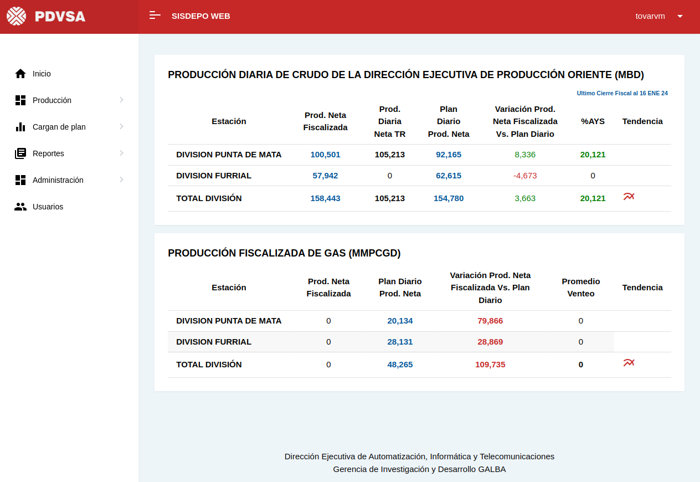
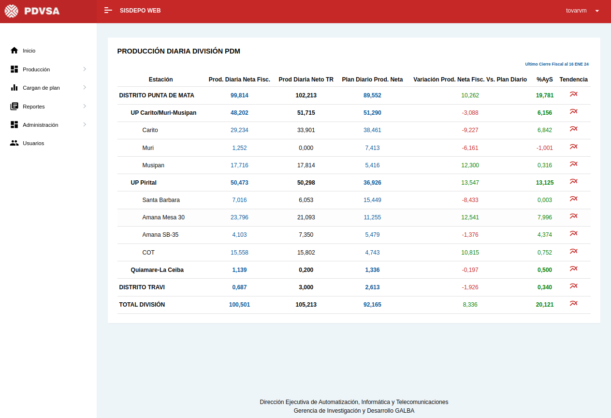
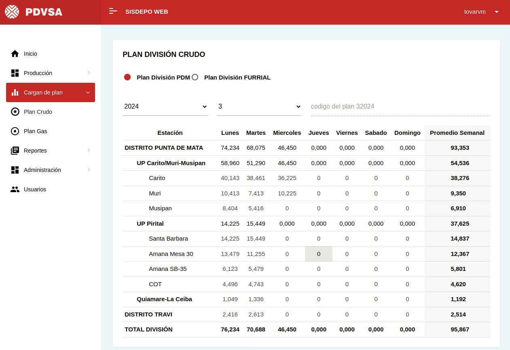
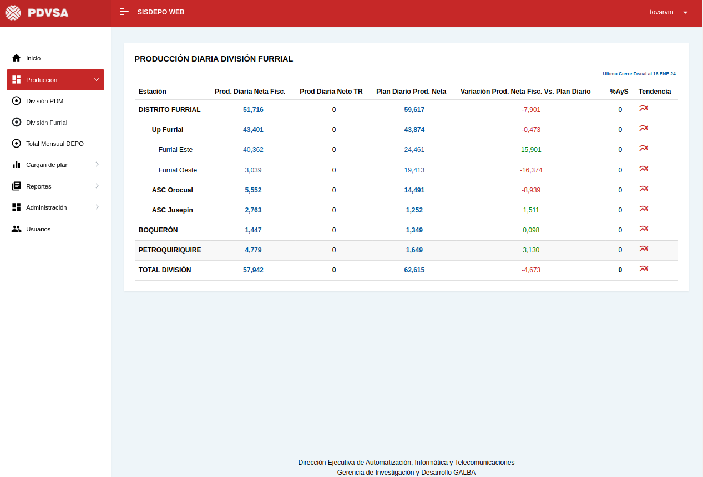
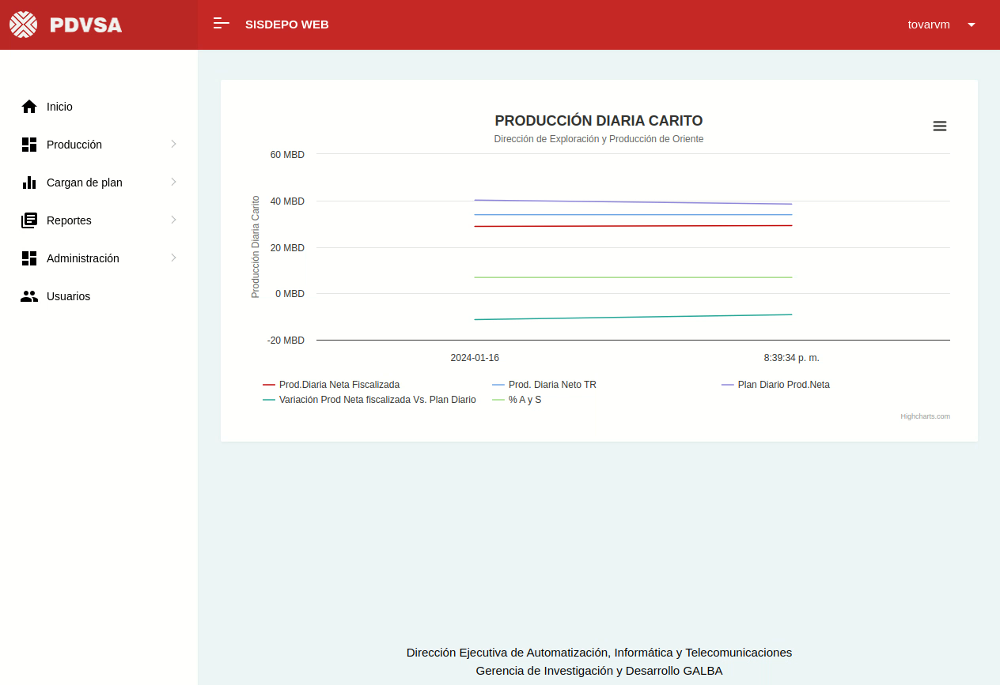

Sistema De Para El Monitoreo Referencial De Los Indicadores De Producción De Crudo Y Gas





Información
- Tecnología: Vue Js, Node Js, Materialize Css, Php Y Postgresql
- Fecha: 2023
- Descripción: Sisdepo Web es un sistema basado en web diseñado para la Dirección Ejecutiva de Producción Oriente de Petróleos de Venezuela, SA (PDVSA). Su función principal es brindar monitoreo de referencia de variables operativas, integrándose con el sistema SCADA nacional de PDVSA, específicamente los sistemas GALBA y CENTINELA. El sistema proporciona información sobre la producción diaria de crudo y gas de las divisiones Punta de Mata y Furrial. Los datos incluyen la producción neta que ha sido fiscalizada, la producción diaria planificada y la variación de la producción neta respecto al plan.